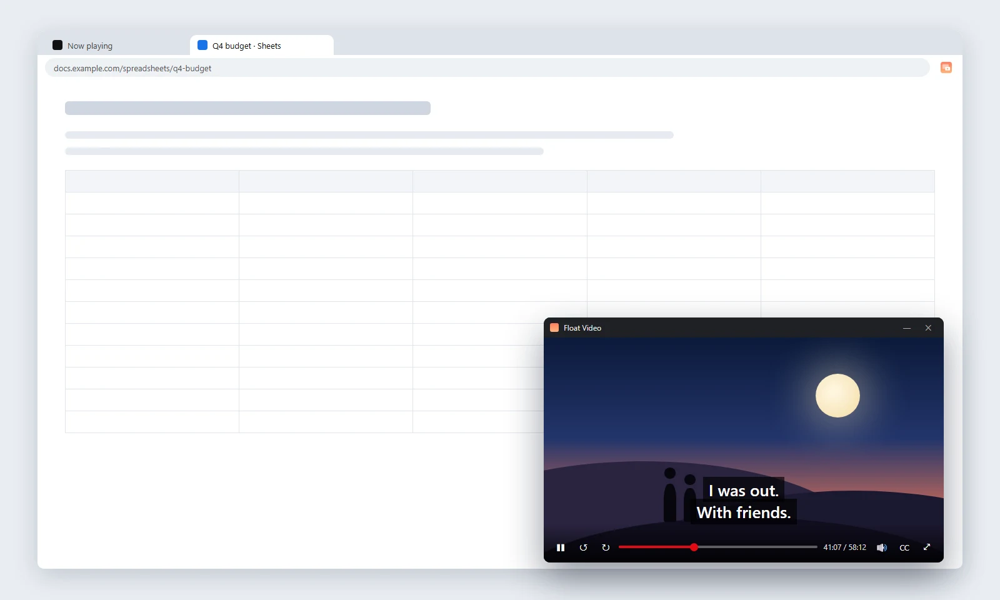
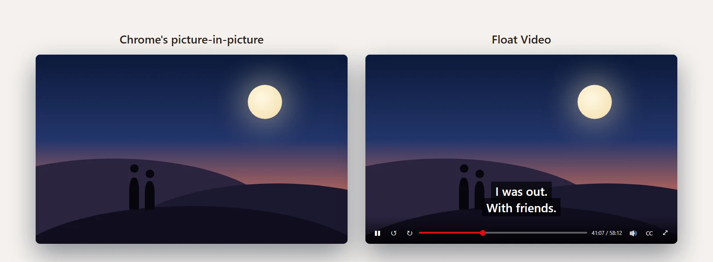
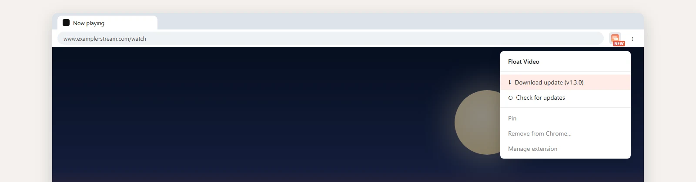

Picture-in-picture drops what matters
I wanted a show playing in a corner while I worked. Chrome has a floating window for that, but Netflix switches it off for its player. Where it does work, the window holds the bare video: no subtitles, no pause, no skip back. For anything with subtitles, that makes it useless.
A floating window that brings the captions
The extension moves the video into a small window it builds itself, so it decides what goes in.
- One key. Alt+P or the toolbar button floats the biggest video on the page, Netflix included.
- Captions come along. Subtitles are copied in as they change and scale with the window.
- Its own controls. Play, skip, seek, mute and captions appear on hover; seeking goes through Netflix's player so it doesn't crash.
- Back where it was. Closing the window returns the video to the page.

Shipped in a day, without the Web Store
I set the behavior and Claude wrote the code, tested against a mock page built like Netflix's player.
- A download page on GitHub Pages with the zip and four install steps.
- First install, first fix. Windows unzipped it one folder too deep, so the zip now unpacks flat.
- Updates without a store. It checks GitHub daily and shows a NEW badge when a version is out.

Available for work